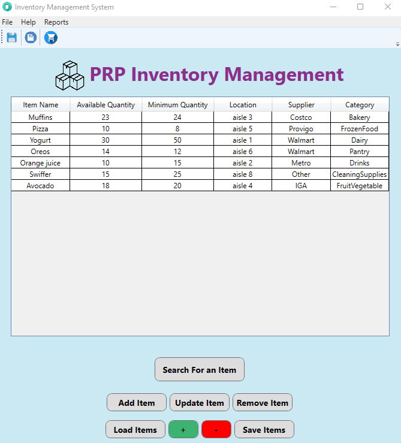

My Projects
Wonderful Events

This project was completed in a team of three people including myself. Wondeful Events is a website that helps users plan their events by providing them with a simple and organized application to keep track of all the information from event details to guests, meals & songs! This website is designed to be user-friendly with vibrant colors to look appealing while also providing CRUD functionalities to the data which is stored and saved in a database. This site also has a sign-in feature which allows the user to store their event details securely & it is also a site that is available in both English and French which allows for more accessibility which we are proud of!
PRP Inventory Management
This project was completed in a team of three people including myself. PRP Inventory Management is a WPF application that helps users manage their inventory by providing them with a multi-functional and easy to use interface to keep track of all the items present in their inventory. This application is designed to be user-friendly with fun colors to look appealing while also providing functionality to load, save, add, update, delete items as well as generate reports. We are proud of all the features this simple interface holds!